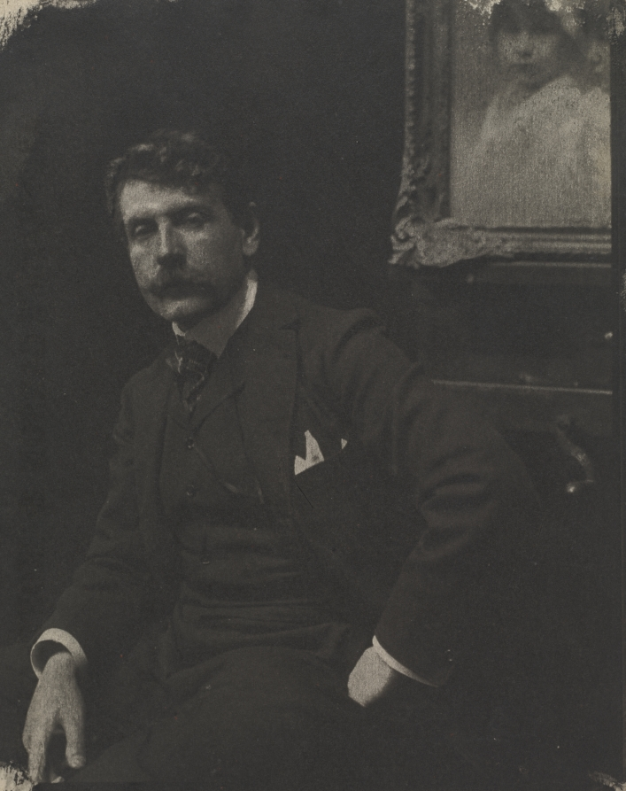
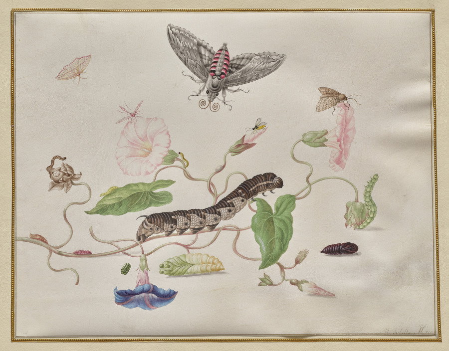
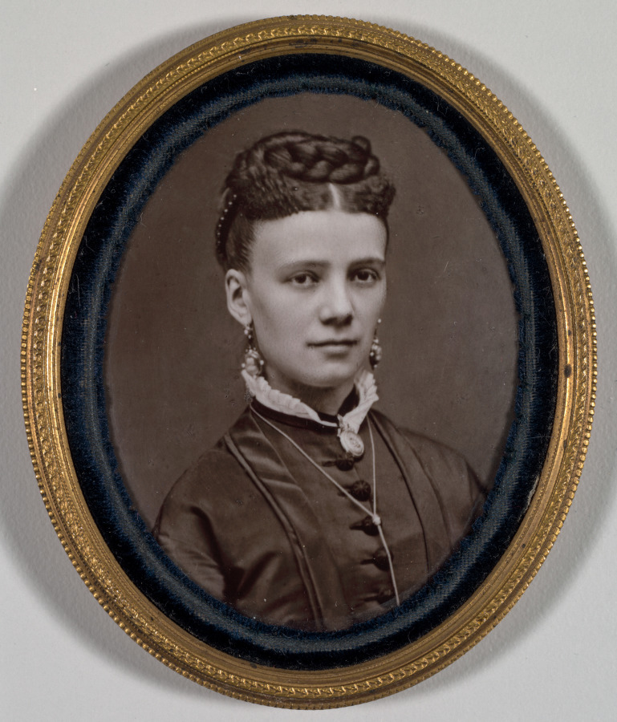
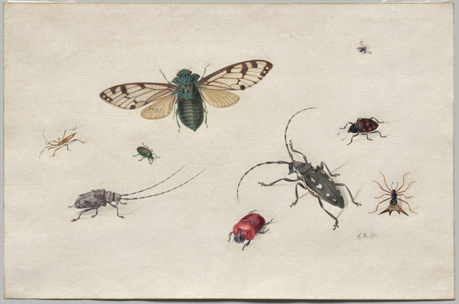
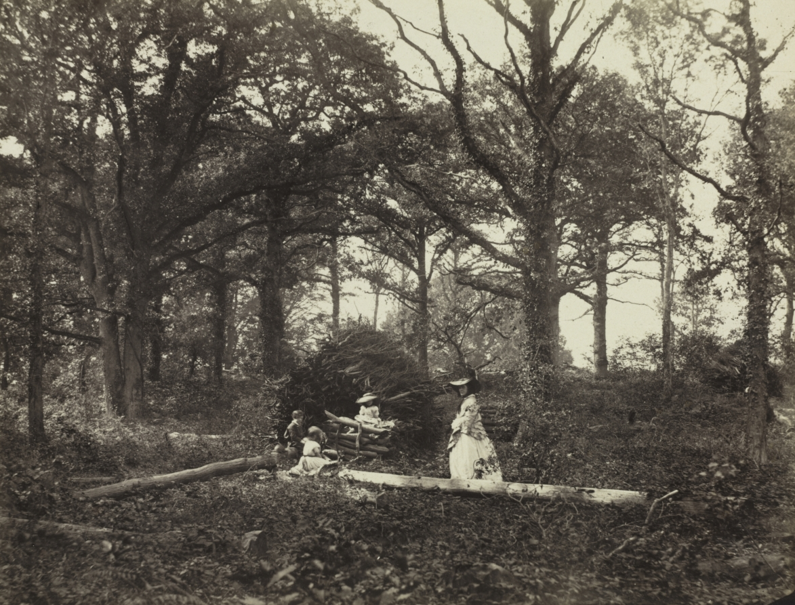
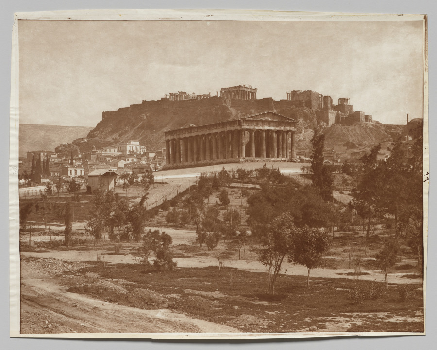

open for a fortnight, daylight only
A finding aid for things that are not ours to keep
Quiet
Holdings
Six studies and photographs, pulled from open collections and laid out on the long table. Nothing here belongs to us; all of it is already in the public domain.

1
1 2Convolvulus and Metamorphosis of the Convolvulus Hawk Moth
Maria Sibylla Merian c. 1670–90 · watercolour on vellum- 1 the moth, kept for the red of its body
- 2 the caterpillar — the reason the page exists
We laid them out in the order they came out of the drawer, and decided that order was as good as any.

Untitled (Portrait of a Woman)
Etienne Carjat 1879 · photograph on enamel, copper-alloy frame Cleveland Museum of Art — CC0
1 2Studies of Insects
Johannes Bronckhorst c. 1665–1727 · watercolour & opaque watercolour- 1 the cicada, placed dead-centre on purpose
- 2 a red beetle nobody has named for us

Landscape
Henry White 1856 · albumen print, wet collodion negative Cleveland Museum of Art — CC0Measurements were taken in low light. Treat every dimension on this table as a polite approximation.

1View of the Acropolis
Adolphe Braun & Co. c. 1880s · mammoth carbon print, brown-toned- 1 the print curls here, and a hand once wrote “77”
Shelf notes
What is on the table, where it really comes from, and the single fact that it is all public domain.
The Cold Store and its “viewing” are fictional — a layout exercise, not a real institution, and nothing on this page is for sale. The images are genuine public-domain works released CC0 by the Cleveland Museum of Art Open Access programme; shelf marks and the curator's notes are invented. Typeset in Cormorant Garamond & Archivo (OFL), self-hosted. Reference-first mimic test · v0.2.